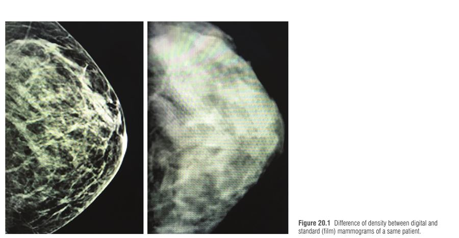

שחזור מבוסס שתל הוא השיטה המובילה לשחזור מיידי אחרי כריתת שד, עם מגמה לשתל ישיר (DTI – direct-to-implant). באופן מסורתי השתל הונח מתחת לפקטורליס מייג'ור; היום, בזכות שורה של התקדמויות, חוזרים ומניחים אותו מעל השריר – במישור הפרה-פקטורלי. הפרק מחולק לשניים: DTI בשלב אחד (עם סיווג כיסוי הרקמה BTCC) ושחזור בשני שלבים (מרחיב → שתל) עם ADM.
1 "מעגל מלא" – למה חזרנו מעל השריר
שנות ה-60: שתל תת-עורי מתחת למתלה דק (אחרי כריתה רדיקלית) → bottoming out, נדידה, rippling, נמק עור, התכווצות קופסית → נטישה → מעבר לתת-שרירי/dual plane → בעיות חדשות (animation, כאב, עוויתות, פגיעה תפקודית) → חזרה לפרה-פקטורלי מודרני.
חמש ההתקדמויות שאפשרו את החזרה:
כריתות חוסכות עור ופטמה (SSM/NSM) → מתלים מאוורים טובים יותר.
מכשירי הערכת פרפוזיה בזמן אמת (ICG angiography, למשל SPY).
ADM ורשתות – שכבת כיסוי ותמיכה נוספת.
שתלי ג'ל בעלי לכידות גבוהה (highly cohesive / form-stable) – פחות rippling.
השתלת שומן עצמי – מסווה rippling ונראות.
למה פרה-פקטורלי? שומר על שלמות הפקטורליס → מבטל כמעט לגמרי animation deformity, פחות כאב ועוויתות, שימור אדוקציה/רוטציה פנימית של הזרוע, ומיקום אנטומי כמו השד הטבעי (שנמצא מעל השריר). ניתוח קצר יותר, לעיתים שחרור אחרי 1–2 שעות או לילה-שניים.
2 אנטומיה: למה המתלה הוא הכל
מקלעת כלי הדם שמזינה את המתלה ואת ה-NAC עוברת בין רצועות Cooper לעור (שומן תת-עורי + דרמיס) → לחץ השתל, מתח בסגירה, נזק תרמי או מתלה דק מדי → דחיסת המקלעת → איסכמיה בקצוות → נמק → חשיפת שתל, זיהום, כישלון.
בפרה-פקטורלי אין שריר בין השתל לעור – לכן איכות המתלה היא "הדרישה החשובה ביותר". דווחו שיעורי נמק עור/פטמה עד 38% ב-NSM.
כלי דם
משמעות
פרפורטור בין-צלעי 2 (מ-IMA)
דומיננטי ב->60% – מגיע ל-NAC
פרפורטור בין-צלעי קדמי 5 (AICAP)
חשוב ל-NAC ולעור התחתון
Lateral thoracic artery
אספקה לטרלית בתת-עור
חתך: פריאריאולרי = גורם סיכון לנמק פטמה ב-NSM; IMF או לטרלי – פחות נמק. המלצת המחברים: שד קטן בלי גידול ברביע העליון-חיצוני → IMF; אחרת → לטרלי. אם הפטמה נמקה – אין יתרון ל-NSM.

הבדל בצפיפות בין מאמוגרפיה דיגיטלית לסטנדרטית של אותה מטופלת — Neligan 5th ed., Fig. 20.1
ממוגרפיה דיגיטלית (בניגוד לפילם) מבדילה בין צפיפות הבלוטה לשכבת הכיסוי (עור + שומן עד רצועות Cooper) – ומאפשרת למדוד את עובי הכיסוי לפני הניתוח. הכיסוי אינו תלוי בנפח השד – שד גדול יכול להיות עם כיסוי דל ולהיפך.
BTCC
עובי כיסוי
המלצה
Type 1
<1 ס"מ – דל
כיסוי נוסף: ADM/רשת, מיקום רטרו-פקטורלי, השתלת שומן מאוחרת
Type 2
1–2 ס"מ – בינוני
שני שלבים (מרחיב → שתל) כדי למנוע מתח בסגירה
Type 3
>2 ס"מ – טוב
DTI פרה-פקטורלי בשלב אחד, אפשר ללא רשת
איור 1: עץ החלטה לפי Breast Tissue Coverage Classification (החיצים מימין לשמאל).
אינדיקציות וטכניקה (DTI)
אינדיקציות = כמו ב-DTI תת-פקטורלי: עור איכותי, פרפוזיה מצוינת, פטוזיס וגודל קלים-בינוניים; בשדיים גדולים ופטוטיים – skin-reducing mastectomy בזהירות.
דיסקציה במישור ה-Scarpa/fascia superficialis במספריים קהות אחרי הזרקת Klein (~250 סמ"ק לשד) – הידרודיסקציה מונעת נזק תרמי ומשמרת את המקלעת; רק אז קאוטר להפרדת הבלוטה מהפקטורליס.
הידרודיסקציה מתחת ל-NAC – מאפשרת הסרה מלאה של רקמה ודוקטים (חשוב ב-BRCA); ביופסיה רטרו-אריאולרית – חובה לבטיחות אונקולוגית.
BMI >40 עם תחלואה נלווית (BMI לבד אינו התווית נגד) · קרינה קודמת לשד · חוסר אתרי תרומת שומן
אונקולוגי
אי יכולת להשיג שוליים נקיים · מעורבות עור נרחבת · מעורבות דופן בית החזה · סרטן דלקתי
קשריות בית שחי נמושות/מודבקות · שלב III/IV · סיכון גבוה לחזרה
קרינה קודמת (לפני השחזור) – בד"כ לא מציעים שחזור מיידי בשתל (פיברוזיס, הרחבה = פריצת עור). PMRT (קרינה אחרי כריתה) אינה התווית נגד – אך יותר סיבוכים קצרים וארוכי טווח.
דחיית שחזור: לאפשר למתלה להחלים; לשפר HbA1c ל-≤7.5%; הפסקת עישון לפחות חודשיים; טיפול נאו-אדג'ובנטי. אחרי קרינה בלי רצון במתלה חופשי – latissimus + מרחיב פרה-פקטורלי בשני שלבים.
אובייקטיבית: ICG angiography – זרימה עורקית ורידית בזמן אמת; כריתת אזורים לא מאוורים.
קלינית: דימום עורקי וורידי בשולי החתך + שכבת שומן סבירה מתחת לעור (= מקלעת תת-דרמלית שמורה). דרמיס נראה לעין מתחת למתלה = מתלה דק מדי.
עובי אינו תחליף לחיוּת – חשוב במיוחד בשמנות עם מתלים עבים.
ב. ניהול הכיס
השתל חייב להתאים בדיוק לכיס: קטן מדי → חלל מת (סרומה) ועודף עור (rippling); גדול מדי → לחץ על המתלה → נמק.
סימון "טביעת רגל" (גבולות מדיאלי/לטרלי ו-IMF) מבחוץ ומבפנים.
בשמנות: קיבוע שומן לטרלי לקו בית השחי הקדמי וקיבוע השומן העליון כלפי מטה → מקטין חלל מת וסרומה, ויוצר מעבר חלק לקוטב העליון (יתרון ייחודי לפרה-פקטורלי; ב-dual plane מתעלמים מהאזור העליון).
ג. ADM
ה-ADM מחליף את תפקיד הפקטורליס – מכסה את כל הפנים הקדמיות; מפחית bottoming out, extrusion, IMF malposition, rippling, נראות, ולאורך זמן גם התכווצות קופסית ומיקום לקוי. (שימוש ב-ADM בשד – off-label ב-FDA; מבנים "עטופים" מוכנים מראש לא מאושרים ב-FDA.)
יריעה מחוררת ~16×20 ס"מ לכל שד. חתך IMF/לטרלי: מקבעים לפקטורליס מלמעלה ויורדים, לטרלית לפאסיית הסראטוס; השתל נכנס מתחת ומקובע לפקטורליס ב-suture tabs; "שרוול" 3–4 ס"מ מתחת לשתל שמעוגן לדופן ויוצר את ה-IMF ומונע bottoming out.
ד. מרחיב
מילוי חלקי 50–70% בסליין או אוויר (off-label, מועדף על המחבר – קל יותר, פחות לחץ על המתלה התחתון ופחות pull-through). בסוף ההרחבה מחליפים לסליין.
לא ליצור חלל מת – מגע בין ה-ADM לעור הכרחי לרה-וסקולריזציה ואינטגרציה; ADM לא מתוח (מרווח להרחבה). בשלב אחד – ADM מתוח.
בסיס המרחיב 0.5–2 ס"מ צר יותר מהשתל הסופי.
ה. נקזים, עור, אספסיס
2 נקזים בין ה-ADM לעור; הוצאה כש-<30 סמ"ק/24 ש' (עד 1–2 שבועות).
עודף עור בשמנות: סגירה אופקית ארוכה – פחות אסתטית; עדיף גישה "מסטופקסית": כריתה פריאריאולרית עם הסרת NAC, tailor-tacking אנכי, והפיכה ל-T הפוך אם הסגירה האנכית >9–10 ס"מ; מתלה דרמלי תחתון מדה-אפיתל מעל ה-ADM – שכבה נוספת שמגינה על המרחיב אם יש dehiscence.
שטיפה משולשת: Cefazolin 1 ג' + Gentamicin 80 מ"ג + Bacitracin 50,000 IU ב-500 סמ"ק סליין; שוטפים את הכיס (פעמיים) ואת השתל; החלפת כפפות; מזעור מגע בשתל; אנטיביוטיקה סביב הניתוח.
ו. שתל והחלפה
שתל form-stable, highly cohesive או high-fill – פחות rippling.
החלפה ~3 חודשים (ללא קרינה) או 3–6 חודשים אחרי קרינה; גישה עדיפה דרך IMF.
אחרי ניתוח: NPWT על החתך (וגם על ה-NAC ב-NSM), חזייה לוחצת 4–6 שבועות, הרחבה שבועית אחרי הוצאת נקזים, ללא מאמץ 6 שבועות.
שחזור פרה-פקטורלי DTI עם מטריצה דרמלית – הדגמת עטיפת השתל והנחתו מעל הפקטורליס.
בפרה-פקטורלי אין שריר מגן → סיכון גבוה יותר ל-extrusion מנמק עור. לכן מתערבים מוקדם ובאגרסיביות.
איור 2: אלגוריתם "שד אדום" (Sigalove 2017). ה-ADM מוצא כולו – מקור אפשרי לביופילם; ADM חדש יוכנס רק בשלב השני.
נמק עור – כל דרגה מטופלת בדחיפות: קל/בינוני – במרפאה (דברידמנט/כריתה, שטיפה משולשת, סגירה); חמור – בחדר ניתוח עם החלפת שתל. בזכות הטיפול האגרסיבי בקל – חמור נדיר.
סיבוכים ייחודיים שכיחים: נמק NAC, rippling.
7 השתלת שומן – "חלק בלתי נפרד"
הפרוצדורה המשלימה השכיחה ביותר: נפח, קונטור, הסוואת rippling ונראות בקוטב העליון, שיפור "גלישה" של הכיס. גם שמנות צריכות לעיתים (מדרגה בקוטב העליון).
בשני שלבים – בד"כ כשלב שלישי (אחרי שהכיס והקפסולוטומיות התייצבו), אפשר בשלב השני אם לא נגעו בכיס. ב-DTI – תמיד בשלב נפרד.
אחרי קרינה על שתל – בד"כ 3–6 חודשים אחרי; אבל נתונים מראים שהשתלה מוקדמת (למשל 6 שבועות אחרי קרינת מרחיב) מנעה כיבים וחשיפת שתל – לפני שהפיברוזיס מתקדם.
Type 1 → צריך מגן (ADM/שריר/שומן) · Type 2 → מרחיב · Type 3 → מיד (DTI).
סיפור דמיוני
דמייני שמיכת פוך (מתלה הכריתה) מעל כרית אוויר (השתל). פעם הכרית הונחה מתחת למזרן (השריר) – אבל כל פעם שישנה התהפכה, המזרן זז והכרית קפצה (animation). היום שמים את הכרית מעל המזרן, מתחת לשמיכה. אבל: אם השמיכה דקה (Type 1) – רואים כל קפל בכרית (rippling), אז עוטפים אותה בציפה (ADM) ומוסיפים פוך (שומן). אם הכרית גדולה מדי – השמיכה נקרעת (נמק). ואם השמיכה מתחילה להאדים – לא מחכים! שולפים את הכרית והציפה ושוטפים הכל בשלושה שמפו (cefazolin, gentamicin, bacitracin).
אישה בת 45, נשאית BRCA1, DCIS בשד שמאל, מתוכננת ל-NSM דו-צדדית. שדיים בגודל C, פטוזיס קל. לא מעשנת, HbA1c 5.6%. ממוגרפיה דיגיטלית: כיסוי תת-עורי 2.4 ס"מ דו-צדדית. אין קרינה קודמת. בחדר הניתוח, אחרי הכריתה דרך חתך IMF, ה-ICG מראה פרפוזיה טובה. בשבוע השני – אודם וחום בשד ימין.
1. לפי BTCC, מהו השחזור המתאים לה?
כיסוי 2.4 ס"מ = Type 3. ההחלטה לפי עובי הכיסוי ולא לפי נפח השד (מסיח 1). אין התוויות נגד לדחייה.
2. מדוע הממוגרפיה הדיגיטלית חשובה כאן יותר מנפח השד?
הכיסוי והנפח הם גורמים בלתי תלויים; פילם אינו מבדיל היטב את שכבת הכיסוי. ההערכה התוך-ניתוחית עדיין נחוצה.
3. בשבוע השני: שד ימין אדום. US מראה סרומה. מה הצעד הבא?
לפי אלגוריתם השד האדום. אם אין שיפור ב-48 ש' → IV + ניתוח: הוצאת שתל ו-ADM (ביופילם), שטיפה משולשת, מרחיב "עירום".
4. איזו מהבאות היא התווית נגד מוחלטת לשחזור פרה-פקטורלי מיידי?
HbA1c >7.5% – מוחלטת (יחד עם עישון פעיל ומתלים איסכמיים). BMI >40 רק עם תחלואה נלווית, וחוסר שומן – "שאלה". PMRT אינה התווית נגד.
5. למה המחבר מעדיף למלא את המרחיב באוויר בשלב הראשון?
מילוי באוויר הוא off-label. המרחיב ממולא ל-50–70% בלבד כדי להפחית לחץ על המתלה, אך בלי ליצור חלל מת בין ה-ADM לעור.
6. מה תפקיד "השרוול" של 3–4 ס"מ ADM מתחת לשתל?
השרוול מקובע לדופן בית החזה ויוצר את הקפל; הנקזים (2) עדיין נחוצים, במיוחד עם יריעות ADM גדולות.
11 סיכום של הסיכום
פרה-פקטורלי = "מעגל מלא"; אפשרי בזכות NSM/SSM, ICG, ADM, שתלים קוהסיביים, השתלת שומן. מבטל animation, פחות כאב.
המקלעת בין Cooper לעור → המתלה הוא הכל. פרפורטור בין-צלעי 2 (>60%), AICAP 5, lateral thoracic. חתך IMF/לטרלי עדיף על פריאריאולרי.
BTCC (ממוגרפיה דיגיטלית): <1 ס"מ ADM/שריר/שומן · 1–2 שני שלבים · >2 DTI בלי רשת. לא תלוי בנפח.